Scenario and Objectives
An order workflow receives a variable number of line items. The calculation is small and belongs only to this workflow, but nested loops and expressions would obscure the business rule. You will implement the rule in the Execute C# script code action.
- Read trigger data through
WorkflowContext. - Validate items and calculate currency values with
decimal. - Return a typed result to the next workflow action.
- Deploy to Azure, test the cloud endpoint with PowerShell, and then test and troubleshoot locally.
- Recognize when custom logic should move to Azure Functions.
Architecture
flowchart LR C[HTTP client] --> T[Request trigger] T --> CS[Calculate pricing] CS -->|Results in action body| R[Success Response 200] CS -. script fails .-> F[Failed Response 400] classDef azure fill:#e6f2fb,stroke:#0078d4,stroke-width:2,color:#0f1722; classDef result fill:#e7f5e7,stroke:#107c10,stroke-width:2,color:#103010; class C,T,CS azure; class R,F result;
Prerequisites and Constraints
- Visual Studio Code, the Azure Logic Apps (Standard) extension, Azure Functions Core Tools v4, and Azurite (the VS Code extension or the
azuritenpm package) for local runs. - An Azure subscription where you can create a resource group, a Workflow Standard plan, and a storage account for the deployment step.
- PowerShell (Windows PowerShell 5.1 or PowerShell 7) for the test commands.
- Basic familiarity with C# classes, async methods, and JSON.
This lab uses these names. The test commands depend on them, so keep them exactly as written.
| Item | Name |
|---|---|
| Workspace | ws-lab06-inline-dotnet-code |
| Logic app (Standard) | la-lab-06-inline-dotnet-code |
| Workflow (Stateful) | wf-inline-pricing |
| Actions (display name / internal name) | Calculate pricing / Calculate_pricing, Success Response / Success_Response, Failed Response / Failed_Response |
Run.| Boundary | Current limit | Design implication |
|---|---|---|
| Script duration | 10 minutes | Use an external compute service for longer work. |
| Action output | Generally 100 MB | Store large content and return a reference. |
| Reuse | Script is workflow-local | Move shared or independently versioned logic to a service. |
Create the Workflow
- In the Activity Bar, select Azure (1). In the Workspace section toolbar, select the Azure Logic Apps icon (2), and then select Create new logic app workspace... (3).
On Project setup, select a Workspace parent folder path outside this workshop repository. Enter
View screenshot
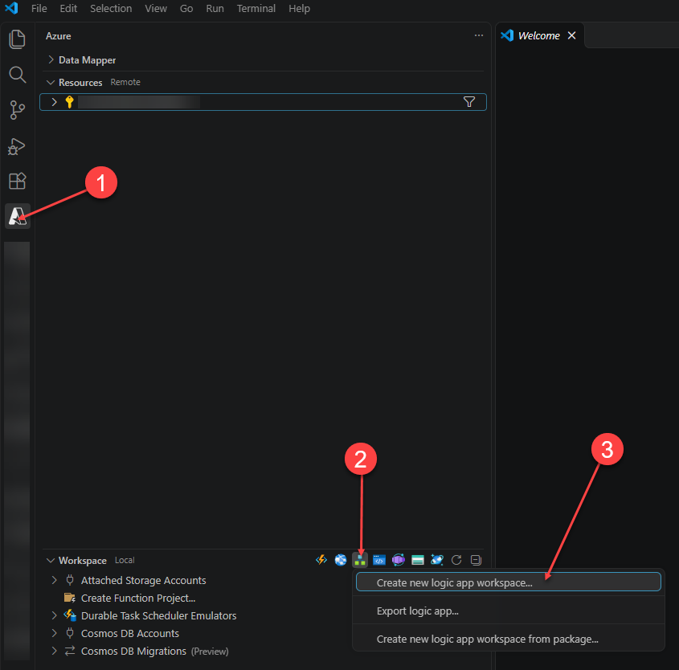
Step 1: Select Azure (1), the Azure Logic Apps icon (2), and then Create new logic app workspace... (3). ws-lab06-inline-dotnet-codefor Workspace name andla-lab-06-inline-dotnet-codefor Logic app name, and select Logic app (Standard). Under Workflow configuration, enterwf-inline-pricingfor Workflow name, select Stateful for Workflow type, and then select Next.On Review + create, confirm the values, and then select Create workspace.View screenshot
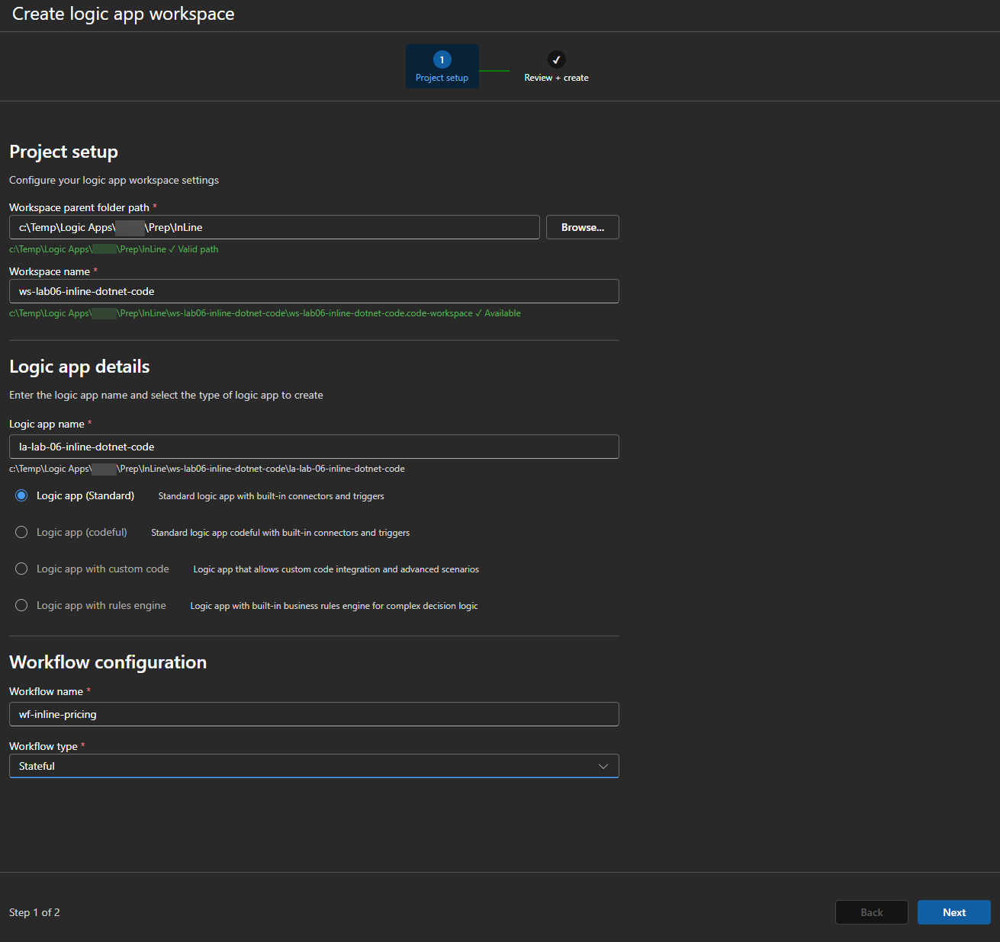
Step 1: Your parent folder path will differ. Use these workspace, logic app, and workflow names so the later test commands match. View screenshot
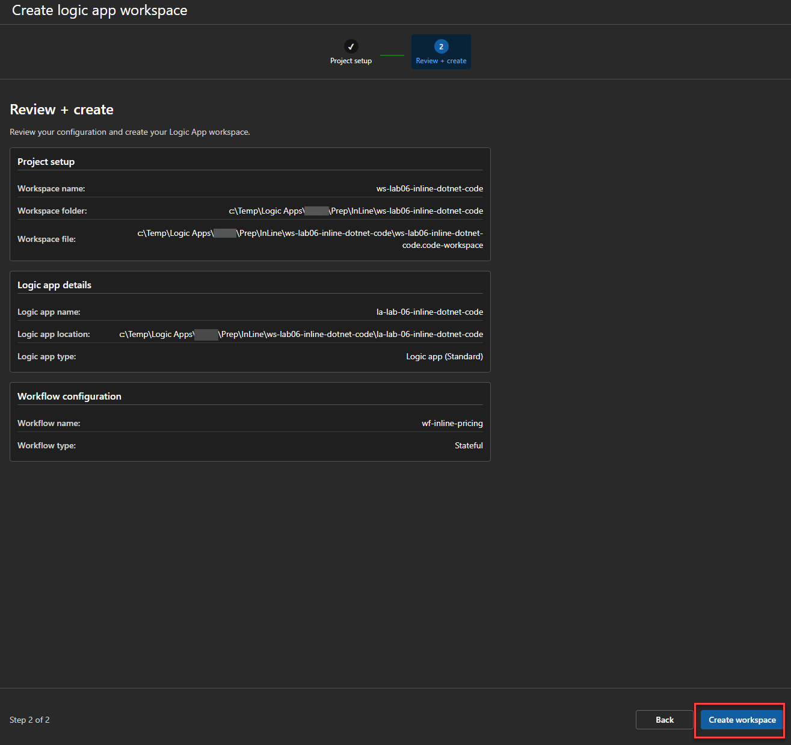
Step 1: Confirm that the workflow name is wf-inline-pricingbefore you select Create workspace. - In Explorer, expand the
la-lab-06-inline-dotnet-codeproject and thewf-inline-pricingfolder. Right-clickworkflow.json, and select Open designer. If VS Code asks whether to enable Azure-hosted connectors, select Skip for now. This lab uses only built-in operations.View screenshot
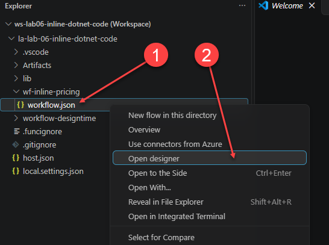
Step 2: Right-click workflow.jsonin thewf-inline-pricingfolder and select Open designer.View screenshot
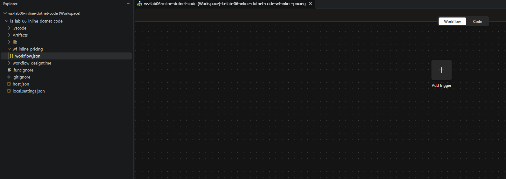
Step 2: The designer opens with an empty canvas and an Add a trigger prompt. - Select Add a trigger, and add the built-in Request trigger When an HTTP request is received.
Set Method to
View screenshot
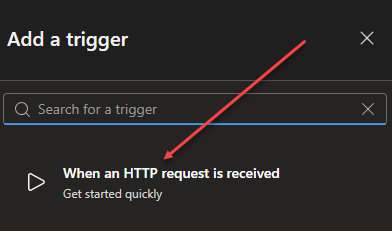
Step 3: Select When an HTTP request is received. POST, and paste the following schema into Request Body JSON Schema.Request schema
{ "type": "object", "properties": { "orderId": { "type": "string" }, "taxRate": { "type": "number" }, "items": { "type": "array", "items": { "type": "object", "properties": { "sku": { "type": "string" }, "quantity": { "type": "integer" }, "unitPrice": { "type": "number" } }, "required": ["sku", "quantity", "unitPrice"] } } }, "required": ["orderId", "items"] }View screenshot
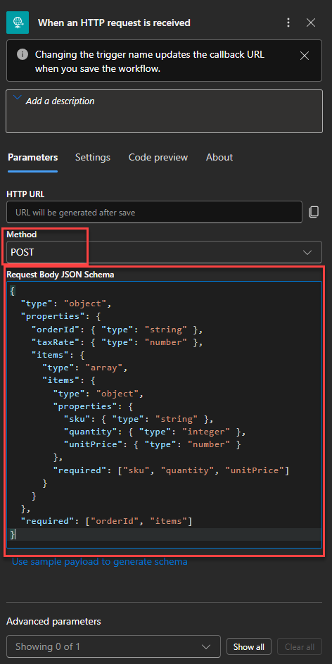
Step 3: Set the method to POST and paste the request schema. The HTTP URL is generated after you save the workflow. - Select the + below the trigger, and then select Add an action. Search for
inline, and under Inline Code, select Execute C# script code.Rename the action to Calculate pricing. Logic Apps generates the internal action nameView screenshot
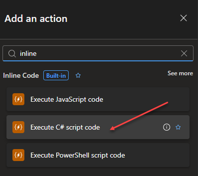
Step 4: Select Execute C# script code, not the JavaScript or PowerShell action. Calculate_pricingby replacing the space with an underscore. The designer shows the display name, while workflow expressions use the internal name. The Code file box showsCalculate_pricing_csharp_script_code; the designer saves it as a.csxfile besideworkflow.json. Select all of the template code in the editor, delete it, and paste this script. How the script works explains each part.Calculate_pricing_csharp_script_code.csx
// Add the required libraries #r "Newtonsoft.Json" #r "Microsoft.Azure.Workflows.Scripting" using Microsoft.AspNetCore.Mvc; using Microsoft.Extensions.Primitives; using Microsoft.Extensions.Logging; using Microsoft.Azure.Workflows.Scripting; using Newtonsoft.Json.Linq; /// <summary> /// Executes the inline csharp code. /// </summary> /// <param name="context">The workflow context.</param> /// <remarks> This is the entry-point to your code. The function signature should remain unchanged.</remarks> // Logic Apps calls this predefined Run method and supplies context and log. public static async Task<PricingResults> Run(WorkflowContext context, ILogger log) { // Read the request trigger output and require a JSON object in its body. var triggerOutputs = (await context.GetTriggerResults().ConfigureAwait(false)).Outputs; var body = triggerOutputs?["body"] as JObject ?? throw new ArgumentException("The request body is required."); // Extract the fields used by the pricing rule. var orderId = body.Value<string>("orderId"); var items = body["items"] as JArray; var taxRate = body.Value<decimal?>("taxRate") ?? 0.08m; // Reject incomplete requests before calculating a result. if (string.IsNullOrWhiteSpace(orderId)) throw new ArgumentException("orderId is required."); if (items == null || items.Count == 0) throw new ArgumentException("At least one line item is required."); if (taxRate < 0m || taxRate > 1m) throw new ArgumentException("taxRate must be between 0 and 1."); // Visit each object in the items array, validate it, and add its line total. decimal subtotal = 0m; foreach (var item in items) { var sku = item.Value<string>("sku"); var quantity = item.Value<int>("quantity"); var unitPrice = item.Value<decimal>("unitPrice"); if (string.IsNullOrWhiteSpace(sku) || quantity <= 0 || unitPrice < 0m) throw new ArgumentException("Each item needs a SKU, positive quantity, and nonnegative unitPrice."); subtotal += quantity * unitPrice; } // Round currency values once the line-item loop is complete. subtotal = Math.Round(subtotal, 2, MidpointRounding.AwayFromZero); var tax = Math.Round(subtotal * taxRate, 2, MidpointRounding.AwayFromZero); // Send operational information through the host logger without the payload. log.LogInformation("Calculated pricing for order {OrderId} with {ItemCount} items.", orderId, items.Count); // The runtime serializes this object into the action output body. return new PricingResults { OrderId = orderId, ItemCount = items.Count, Subtotal = subtotal, Tax = tax, Total = subtotal + tax, Currency = "USD" }; } // This return model gives downstream actions a predictable JSON shape. public class PricingResults { public string OrderId { get; set; } public int ItemCount { get; set; } public decimal Subtotal { get; set; } public decimal Tax { get; set; } public decimal Total { get; set; } public string Currency { get; set; } }View screenshot
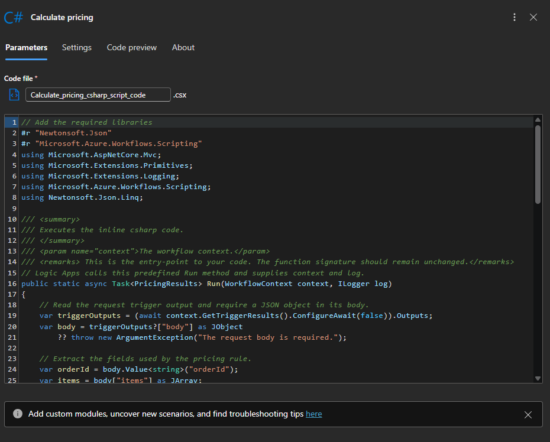
Step 4: The action is named Calculate pricing, and the code file is Calculate_pricing_csharp_script_code.csx. Replace the template with the lab script; your editor shows the first lines of that script. - Select the + below Calculate pricing, select Add an action, search for
Response, and add the Request action Response. Rename it Success Response, and keep Status Code at200.Select the Body field, select the fx icon to open the Expression editor, enter the following expression without a leadingView screenshot
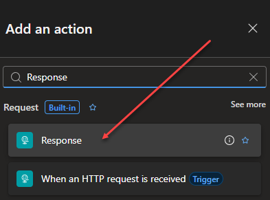
Step 5: Add the Response action below Calculate pricing. @, and select Add. The Body field shows an fx token. Here,Calculate_pricingis the internal action name from step 4.Success Response body
body('Calculate_pricing')Expression, not text: If you paste or type the expression directly into the Body field, the designer saves it as plain text and the response returns the literal text instead of the pricing result. Open the action's Code preview tab to confirm that the body is"@body('Calculate_pricing')", including the@.Open the action's Settings tab. Under Run after, confirm that Calculate pricing is selected with only Is successful checked. This is the default.View screenshot
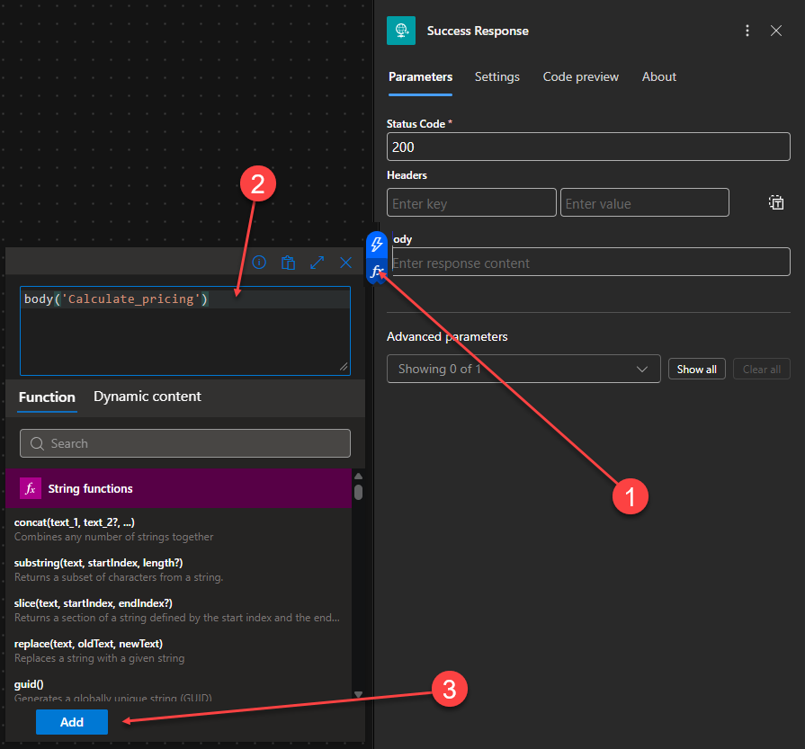
Step 5: With Status Code at 200, select fx beside Body (1), enter body('Calculate_pricing')in the Expression editor (2), and select Add (3).View screenshot
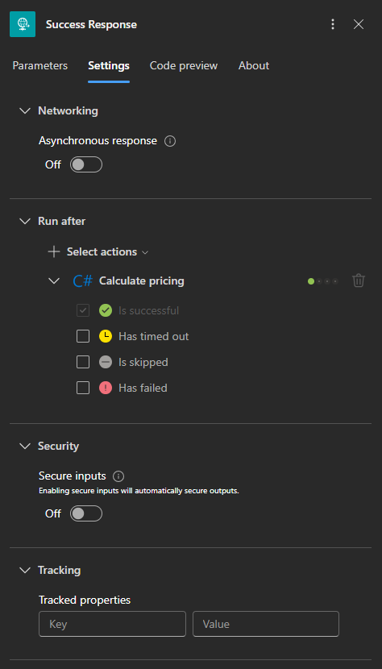
Step 5: Success Response runs only when Calculate pricing is successful. - To handle a script failure, add a second response next to the first one. Hover over the connector between Calculate pricing and Success Response, select the +, and then select Add a parallel branch.
View screenshot
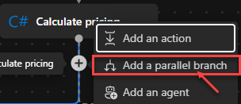
Step 6: Select Add a parallel branch so both responses sit directly below Calculate pricing. - In the new branch, add another Response action. Rename it Failed Response, and set Status Code to
400. Select the Body field, select the fx icon, paste the following expression without a leading@, and select Add. The expression is a single line, so copy all of it with the Copy button.Failed Response body
addProperty(addProperty(json('{}'), 'code', actions('Calculate_pricing')?['error']?['code']), 'message', first(split(last(split(coalesce(actions('Calculate_pricing')?['error']?['message'], ''), 'failed with the error ''')), ''' and stack trace ''')))When the script throws, this body returns the error code and only the message that the script threw, without the runtime details and stack trace:
{"code":"InvokeFunctionFailed","message":"Each item needs a SKU, positive quantity, and nonnegative unitPrice."}Use the action error, not Outputs: When the script throws, Calculate pricing has no output body, so the Outputs token (outputs('Calculate_pricing')) is empty and the 400 response has no body. The error details are on the action itself, inactions('Calculate_pricing')?['error']. How the Failed Response body works explains each part of the expression.Open the Code preview tab and confirm that the body starts withView screenshot
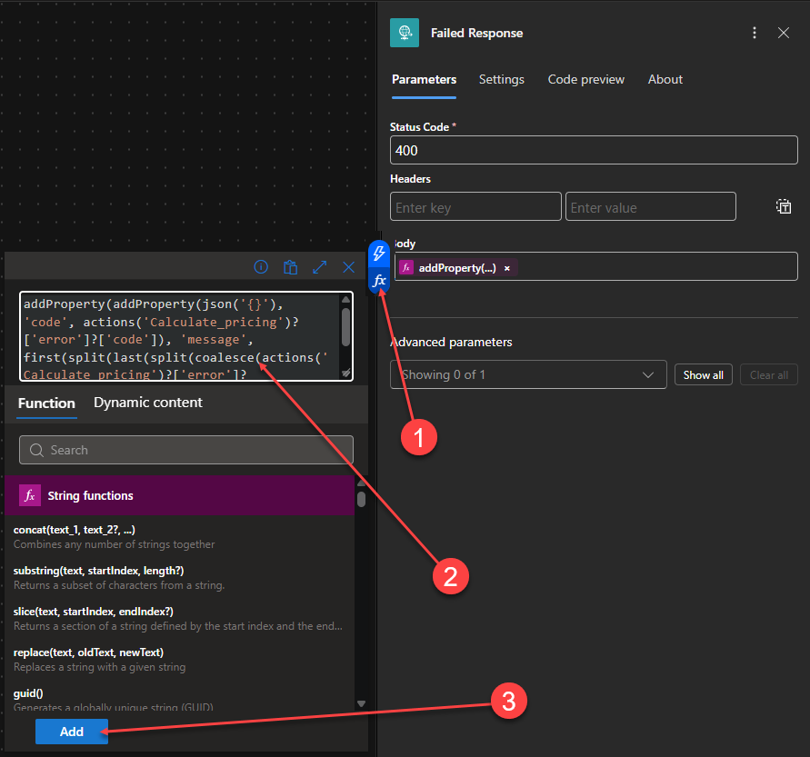
Step 7: With Status Code at 400, select fx beside Body (1), enter the Failed Response body expression in the Expression editor (2), and select Add (3). "@addProperty(, including the@. If the@is missing, the designer saved the expression as text. Clear the Body field, and add the expression again with fx. Open the Settings tab. Under Run after, select Calculate pricing, clear Is successful, and select only Has failed.View screenshot
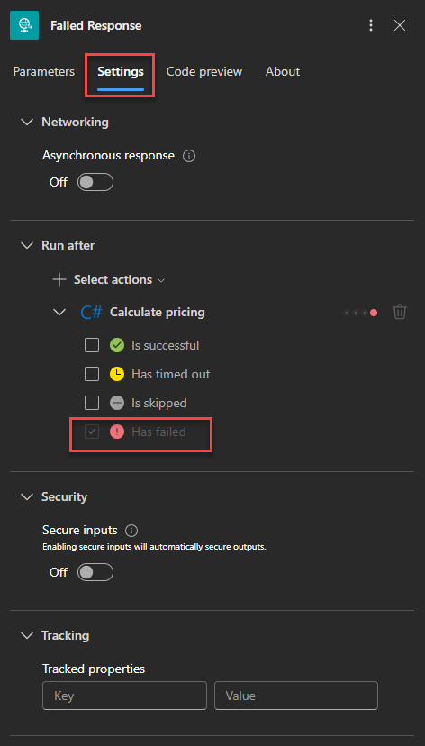
Step 7: Failed Response runs only when Calculate pricing has failed. - Save the workflow (Ctrl+S) and compare it with the completed design. Success Response and Failed Response must be parallel branches below Calculate pricing.
View screenshot
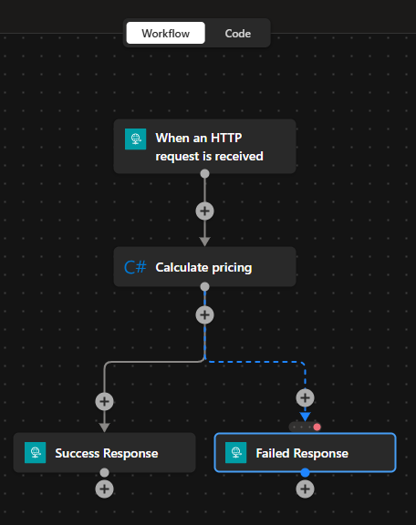
Step 8: Confirm that your completed workflow matches this layout before you deploy it.
How the C# Script Works
Understand the script contract
A Logic Apps C# script is a .csx file compiled and hosted by the Azure Logic Apps runtime. The runtime supplies the workflow objects and invokes the script entry point.
| Code element | Purpose |
|---|---|
Run | This predefined method name is the script entry point. The runtime calls Run, so do not rename it. Use Task<T> with async when awaiting workflow data and returning a value. |
WorkflowContext context | The runtime provides this object. Use GetTriggerResults() for the trigger or GetActionResults("action-name") for a preceding action. Each operation result can include inputs, outputs, status, timing, tracking information, and error details. |
ILogger log | The runtime injects this logger. Use it instead of Console.Write so messages flow through the host logging pipeline and can appear in Application Insights when configured. Log identifiers and counts rather than sensitive payloads. |
#r directives | A #r directive tells the script compiler to reference an assembly. Here, the script references the JSON and Logic Apps scripting assemblies available to the host. |
using directives | A using directive imports a namespace from a referenced or host-provided assembly, allowing names such as WorkflowContext, ILogger, and JObject without their fully qualified names. |
PricingResults | This class defines the shape returned by Run. The runtime serializes the instance to JSON and places it in the C# action's output body for later workflow actions. |
#r "Microsoft.Azure.Workflows.Scripting" makes the assembly available to the script compiler; using Microsoft.Azure.Workflows.Scripting; then imports its namespace. The Logic Apps host already provides common framework and logging assemblies, while these explicit directives make this script's dependencies clear.Follow the data through the script
GetTriggerResults()retrieves the Request trigger result, andOutputs["body"]selects the submitted JSON body.- The script reads
orderId,items, andtaxRate. BecausetaxRateis optional, the null-coalescing operator (??) supplies0.08mwhen it is absent. - The
foreachloop processes one JSON object from theitemsarray at a time. It reads that item's SKU, quantity, and unit price, validates them, then addsquantity * unitPricetosubtotal. - After every item has been processed, the script rounds the subtotal, calculates and rounds tax, and writes a structured log message.
- The script creates one
PricingResultsobject. Its public properties become JSON fields in the action output body, which Success Response reads with@body('Calculate_pricing'). - When validation fails, the script throws an
ArgumentException. Calculate pricing then has the status Failed, Success Response is skipped, and Failed Response runs and returns the exception message to the caller.
PricingResults, you change the data exposed by the script action.How the Failed Response body works
When the script throws, the runtime sets the error on Calculate pricing. The error code is InvokeFunctionFailed, and the error message wraps the text that the script threw in runtime details and a stack trace:
The function '...csx' failed with the error '<message>' and stack trace '...' when executing. Please verify function code is valid.
The Failed Response expression from step 7 builds a new JSON object that keeps the code and only <message>. Read it from the inside out:
| Expression part | Result |
|---|---|
json('{}') | An empty JSON object to build the response body on. |
addProperty(..., 'code', actions('Calculate_pricing')?['error']?['code']) | Adds a code property with the error code. |
coalesce(actions('Calculate_pricing')?['error']?['message'], '') | The full error message, or an empty string if there is none, so that split never receives null. |
last(split(..., 'failed with the error ''')) | The text after the opening marker, which starts with the script's message. |
first(split(..., ''' and stack trace ''')) | The text before the stack trace, which is only the script's message. |
addProperty(..., 'message', ...) | Adds a message property with that text. |
'') stand for one literal apostrophe. For example, 'failed with the error ''' is the text failed with the error '. If a marker is not found, split returns the whole text, so the response falls back to the full message instead of an empty body.{"message":"Invalid order."}.Deploy to Azure and Test with PowerShell
Publish the project to a Standard logic app in Azure, and then call the cloud endpoint from PowerShell.
- Save all files. In the Activity Bar, select Azure. Under Resources, select Sign in to Azure if you are not already signed in, and confirm that the subscription you want to use appears.
- In Explorer, right-click the
la-lab-06-inline-dotnet-codeproject folder (1), and select Deploy to logic app... (2).View screenshot
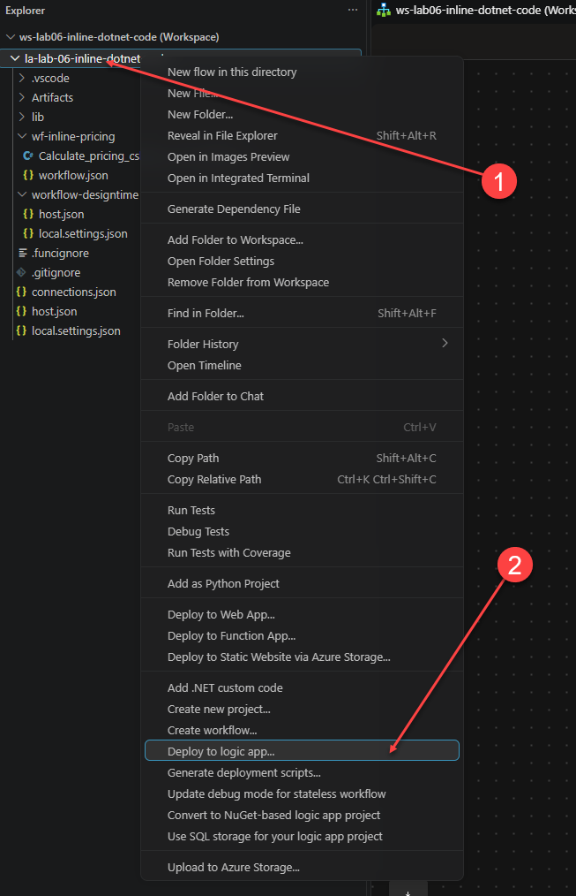
Right-click the project folder (1), not a workflow folder, and select Deploy to logic app... (2) to deploy the entire Logic Apps project, including the .csxfile. - Select Create new Logic App (Standard) in Azure Advanced, and then answer the prompts.
Existing plan or logic app: If you already created an empty Standard logic app for this lab, select it by name in the Deploy to logic app list instead of a Create new option, confirm the overwrite prompt, and skip the table below. Deploying to a logic app overwrites its deployed project, so select one only if it is dedicated to this lab. To reuse only an existing WS1 plan, select Create new Logic App (Standard) in Azure Advanced and choose the plan at the App Service plan prompt.
Prompt Value Logic app name A globally unique name, for example la-lab-06-inline-dotnet-<suffix>Location A region near you Hosting plan Workflow Standard App Service plan Select your existing Workflow Standard plan (for example, WS1), or select Create new App Service plan, enter a unique name, and select the WS1 pricing tier. If VS Code asks you to type a plan name, no matching plan exists, and the name you enter creates a new plan. Resource group Create new resource group, for example rg-lab06-inline-dotnet-<suffix>Storage account Create new storage account with a unique name that uses only lowercase letters and numbers SQL storage No Application Insights Skip for now - When the confirmation message appears, select Deploy. To follow progress, select View > Output, and then select Azure Logic Apps (Standard) in the Output list. Wait for the message that the deployment completed.
- In the Azure portal, open the new logic app, select Workflows, and then select
wf-inline-pricing. Open the Designer, select the When an HTTP request is received trigger, and copy its HTTP URL. - Open a PowerShell terminal, replace
<paste-the-HTTP-URL>with the complete URL you copied (including its query string), and run this setup. The block is self-contained: it does not need the local host. Keep the URL inside single quotes. The helper sends a payload and displays both the HTTP status and the response body, including expected error responses. It works in Windows PowerShell 5.1 and PowerShell 7, and it shows(empty)when the response has no body.$callbackUri = '<paste-the-HTTP-URL>' function Invoke-PricingWorkflow { param([hashtable]$Payload) $body = $Payload | ConvertTo-Json -Depth 5 $request = @{ Uri = $callbackUri Method = 'Post' ContentType = 'application/json' Body = $body UseBasicParsing = $true } if ($PSVersionTable.PSVersion.Major -ge 7) { # PowerShell 7 returns 4xx and 5xx responses instead of throwing. $response = Invoke-WebRequest @request -SkipHttpErrorCheck $statusCode = [int]$response.StatusCode $responseBody = $response.Content } else { try { $response = Invoke-WebRequest @request $statusCode = [int]$response.StatusCode $responseBody = $response.Content } catch { if (-not $_.Exception.Response) { throw } $statusCode = [int]$_.Exception.Response.StatusCode $responseBody = $_.ErrorDetails.Message } } # An empty body arrives as an empty byte array, which PowerShell displays as {}. if ($responseBody -is [byte[]]) { $responseBody = [System.Text.Encoding]::UTF8.GetString($responseBody) } if ([string]::IsNullOrWhiteSpace($responseBody)) { $responseBody = '(empty)' } [pscustomobject]@{ StatusCode = $statusCode ResponseBody = $responseBody } | Format-List }Cloud Test 1: Valid order
Invoke-PricingWorkflow -Payload @{ orderId = 'ORD-2001' taxRate = 0.08 items = @( @{ sku = 'AZ-100'; quantity = 2; unitPrice = 18.50 }, @{ sku = 'AZ-200'; quantity = 1; unitPrice = 25.00 } ) }Expect
StatusCode : 200and this response body. The subtotal is 2 × 18.50 + 25.00 = 62.00. Tax at 8% is 4.96, so the total is 66.96. The JSON shows the subtotal as62.0, not62.00.{"orderId":"ORD-2001","itemCount":2,"subtotal":62.0,"tax":4.96,"total":66.96,"currency":"USD"}GotResponseBody : (empty)? The script ran, but Success Response has no Body, so the logic app returns 200 with no content. In the run history, Calculate pricing shows the pricing JSON in its outputs, while Success Response shows only the status code. Set the body as described in step 5, save, deploy again, and repeat the test. If the designer already shows the body, deploy again: Azure runs the last deployed version, not the open designer.Cloud Test 2: Invalid order
Invoke-PricingWorkflow -Payload @{ orderId = 'ORD-2002' taxRate = 0.08 items = @( @{ sku = 'AZ-100'; quantity = 0; unitPrice = 18.50 } ) }Expect
StatusCode : 400. The quantity of0violates the validation rule, so the script throws, Success Response is skipped, and Failed Response returns the error code and the message that the script threw. The stack trace stays in the run history.{"code":"InvokeFunctionFailed","message":"Each item needs a SKU, positive quantity, and nonnegative unitPrice."}Got the full message withfailed with the errorand a stack trace? Failed Response returns the whole error object, for example from the shorter expressionactions('Calculate_pricing')?['error']. Replace its body with the expression from step 7, save, deploy again, and repeat the test.GotResponseBody : (empty)? Failed Response has no Body, or its body uses the Outputs token, which is empty when the script fails. In the run history, Failed Response shows only the status code. Set the body as described in step 7, save, deploy again, and repeat the test. If the designer already shows that body, Azure is still running an earlier deployment, because changes reach Azure only after you save the workflow and deploy again. To check which body the run used, open the run, select Failed Response, and look at its Inputs. - In the portal, open the workflow's Run history, and select the two runs. The invalid-order run is listed as Failed because Calculate pricing failed, even though the workflow handled the error and returned the 400. Inside that run, Calculate pricing shows Failed with the error message and a line number, Success Response shows Skipped, and Failed Response shows Succeeded because it ran as designed and sent the 400.
sig value that lets anyone who has the URL run the workflow. Do not commit or share it. local.settings.json is not deployed. It sets LOGIC_APPS_CUSTOMCODE_DOTNETVERSION to net10.0 for local runs. This script does not depend on the .NET version, so the Azure test works without that setting. To run the same .NET version in Azure, add it as an app setting on the logic app in the portal.Test Locally
Now run the same workflow on your machine. Local runs are the fast loop for changing the script and seeing the result without redeploying.
- Start Azurite. With the Azurite VS Code extension, open the Command Palette and run Azurite: Start. The generated
local.settings.jsonuses development storage, so the host cannot start without it. - In the VS Code window containing
ws-lab06-inline-dotnet-code, press F5. If VS Code asks which configuration to run, select the generated Logic Apps project configuration. - Open the bottom Terminal panel. Wait until the host lists the
wf-inline-pricingfunction with its local URL and showsHost lock lease acquired, and then leave this terminal running.wf-inline-pricing: [HEAD,POST,OPTIONS] http://localhost:7071/api/wf-inline-pricing/triggers/When_an_HTTP_request_is_received/invoke
Do not call this URL directly: The host shows the trigger path without its query string. A request to it returns400 MissingApiVersionParameter, and with onlyapi-versionadded it returns401 DirectApiAuthorizationRequired, because the trigger accepts only requests signed with asigvalue. The next step gets the complete signed URL. The messageCsproj not found ... Skipping user secrets file configurationis expected for this project and does not stop the host. - Select the + in the Terminal panel to open a second PowerShell terminal. Run the following to get the local signed callback URL for the trigger. It replaces the portal URL from the cloud test.
$managementUri = 'http://localhost:7071/runtime/webhooks/workflow/api/management/workflows/wf-inline-pricing/triggers/When_an_HTTP_request_is_received/listCallbackUrl?api-version=2022-05-01' $callbackUri = (Invoke-RestMethod ` -Uri $managementUri ` -Method Post ).value
Check
$callbackUri. It should start withhttp://localhost:7071/api/wf-inline-pricing/triggers/When_an_HTTP_request_is_received/invokeand end with asig=value. - In the same second terminal, define the
Invoke-PricingWorkflowhelper. It is the same function as in the cloud test. Each terminal starts empty, so you must define it in every new terminal, even if you defined it earlier for the cloud test. The helper reads$callbackUriwhen you call it, so it sends requests to the local URL from the previous step.function Invoke-PricingWorkflow { param([hashtable]$Payload) $body = $Payload | ConvertTo-Json -Depth 5 $request = @{ Uri = $callbackUri Method = 'Post' ContentType = 'application/json' Body = $body UseBasicParsing = $true } if ($PSVersionTable.PSVersion.Major -ge 7) { # PowerShell 7 returns 4xx and 5xx responses instead of throwing. $response = Invoke-WebRequest @request -SkipHttpErrorCheck $statusCode = [int]$response.StatusCode $responseBody = $response.Content } else { try { $response = Invoke-WebRequest @request $statusCode = [int]$response.StatusCode $responseBody = $response.Content } catch { if (-not $_.Exception.Response) { throw } $statusCode = [int]$_.Exception.Response.StatusCode $responseBody = $_.ErrorDetails.Message } } # An empty body arrives as an empty byte array, which PowerShell displays as {}. if ($responseBody -is [byte[]]) { $responseBody = [System.Text.Encoding]::UTF8.GetString($responseBody) } if ([string]::IsNullOrWhiteSpace($responseBody)) { $responseBody = '(empty)' } [pscustomobject]@{ StatusCode = $statusCode ResponseBody = $responseBody } | Format-List }GotThe term 'Invoke-PricingWorkflow' is not recognized? The helper is not defined in this terminal. Run the function block above in the same terminal, and then run the test again. - Send the valid order.
Local Test 1: Valid order
Invoke-PricingWorkflow -Payload @{ orderId = 'ORD-2001' taxRate = 0.08 items = @( @{ sku = 'AZ-100'; quantity = 2; unitPrice = 18.50 }, @{ sku = 'AZ-200'; quantity = 1; unitPrice = 25.00 } ) }Expect
StatusCode : 200and the same body as in Azure:{"orderId":"ORD-2001","itemCount":2,"subtotal":62.0,"tax":4.96,"total":66.96,"currency":"USD"} - Send the invalid order.
Local Test 2: Invalid order
Invoke-PricingWorkflow -Payload @{ orderId = 'ORD-2002' taxRate = 0.08 items = @( @{ sku = 'AZ-100'; quantity = 0; unitPrice = 18.50 } ) }Expect
StatusCode : 400and the same body as in Azure:{"code":"InvokeFunctionFailed","message":"Each item needs a SKU, positive quantity, and nonnegative unitPrice."}Local result differs from Azure? The local host runs the workflow saved on your machine, and Azure runs the last deployed version. If you changed the workflow after you deployed, the results can differ. Save the workflow, restart the host, and compare the Failed Response body in Code preview with step 7. - Look at the host terminal. The first request is slower because the host compiles the script. After a valid request, the log contains the message that the script wrote, and it identifies the order and item count without logging the customer payload:
Calculated pricing for order ORD-2001 with 2 items.
The host terminal does not show the invalid request as an error. The script failure is recorded in the run history, which you inspect next.
- In Explorer, right-click
wf-inline-pricing/workflow.json, select Overview, and open the Run history. Select a run, and then select Calculate pricing to inspect its inputs and outputs, or its error for the invalid order.
Debug the Inline Script
.csx file: You cannot step through an inline C# script in VS Code. The extension's F5 configuration attaches the debugger to the Logic Apps host, but the runtime compiles the .csx in memory and runs it in a separate script worker process. There is no source file for the debugger to bind to, which is why the stack trace later shows in :line 45 with no file name. In testing for this lab, a breakpoint in the .csx never bound and never hit, even with a debugger attached to the worker process.Use these techniques instead. They are enough for most inline scripts, which are small by design.
- Trace with
ILogger. Add a line such aslog.LogInformation("Item {Sku} has quantity {Quantity}.", sku, quantity);inside theforeachloop, and save the file. The runtime loads the script when the host starts, so a saved change is not used until you restart the host: press Ctrl+C in the host terminal, and then press F5 again. In the second terminal, send Local Test 1 again and read the new lines in the host terminal. Log identifiers and counts, not the full payload. - Use the line number in the error. Send Local Test 2 again and open the failed Calculate pricing action in the run history. The error says
stack trace ' at Script.<Run>d__1.MoveNext() in :line 45. Line 45 ofCalculate_pricing_csharp_script_code.csxis thethrowinside theforeachloop. The line number matches the.csxfile, so you can jump straight to the statement that failed. - Inspect the data around the script. In the run history, the inputs and outputs of the trigger, Calculate pricing, and each response show exactly what the script received and returned. Most inline script bugs are an unexpected payload shape, such as
quantitysent as text or an emptyitemsarray. - Keep the logic testable. Keep the rules (validation, rounding) in plain methods that take simple values, and keep reading from
WorkflowContextinRun. You can copy the plain methods into a console app or unit test, where you can set breakpoints. - Use Application Insights in Azure. If you enabled Application Insights at deployment,
ILoggermessages arrive as traces that you can query. This lab skipped it to avoid extra resources. - Move to a debuggable component when you need breakpoints. If the logic grows, needs NuGet packages, or needs step-through debugging, move it to a .NET custom code function in the Logic Apps project, which you can debug in VS Code, or to Azure Functions. See Inline Code or Azure Functions?
Inline Code or Azure Functions?
| Keep inline C# when | Move to Azure Functions when |
|---|---|
| The logic is small, workflow-local, and executes within action limits. | Multiple workflows or applications share the logic. |
| Deployment and versioning should follow one workflow. | The code needs independent deployment, scaling, testing, or ownership. |
| The script is clearer than a large expression graph. | The solution needs long execution, large output, complex dependencies, a public API, or step-through debugging. |
Troubleshooting
| Symptom | Check |
|---|---|
| Script does not compile | Keep the #r directives, namespaces, predefined Run name, and supported method signature. |
| Body is null | Inspect trigger outputs and confirm the JSON request used application/json. |
A valid order returns 200 with (empty) or the literal text body('Calculate_pricing') | The Success Response body is empty or was saved as text. Re-enter it in the Expression editor (fx) and confirm the Code preview shows "@body('Calculate_pricing')". |
The invalid order returns 400 with (empty) | Failed Response has no body, or it uses the Outputs token, which is empty when the script fails. Use the expression from step 7, which reads the action error with actions('Calculate_pricing')?['error']. Save, and deploy again. |
The 400 message starts with The function '...' and contains a stack trace | Failed Response returns the whole error object. Replace its body with the expression from step 7, save, and deploy again. |
| The 400 body is the expression text instead of JSON | The designer saved the body as text. In Code preview, the body must start with "@addProperty(. Clear the Body field, and add the expression again with fx. |
| Response cannot find output | Use the action's internal name in body('Calculate_pricing'), not its display name with a space. |
| Both responses run, or neither runs | Review Run after: Success Response uses only Is successful, and Failed Response uses only Has failed. |
I changed the .csx file, but the local result did not change | The host compiles the script at startup. Stop the host with Ctrl+C, and run it again with F5. |
A breakpoint in the .csx never hits | Breakpoints are not supported in inline scripts. See Debug the Inline Script. |
The term 'Invoke-PricingWorkflow' is not recognized | The helper is defined only in the terminal where you ran it. In the terminal you are testing from, run the Invoke-PricingWorkflow function block from Test Locally or the cloud test, and then run the test again. For local tests, also set $callbackUri to the local signed URL first. |
A local request returns 400 MissingApiVersionParameter or 401 DirectApiAuthorizationRequired | You used the URL that the host shows in the terminal, which has no api-version or sig value. Get the signed URL with $managementUri as described in Test Locally, and send the request to $callbackUri. |
| Callback URL lookup fails locally | Confirm that the workflow and trigger names match $managementUri, that Azurite is running, and that the host finished starting on port 7071. Review the host terminal for an earlier startup error. |
| The Azure request returns 401 or 404 | Copy the complete HTTP URL again, including the sig value, and keep it in single quotes. Confirm that the deployment finished and that the workflow is enabled. |
| Package import fails | For optional NuGet packages, place functions.proj in the workflow folder, target netstandard2.0, and restart the app. |
Cleanup and References
Stop the local host (Ctrl+C) and Azurite. Delete the rg-lab06-inline-dotnet-<suffix> resource group to stop charges. If you reused an existing plan, delete only the logic app and storage account that the deployment created, so you keep the plan. Delete the generated project folder if you do not need it.